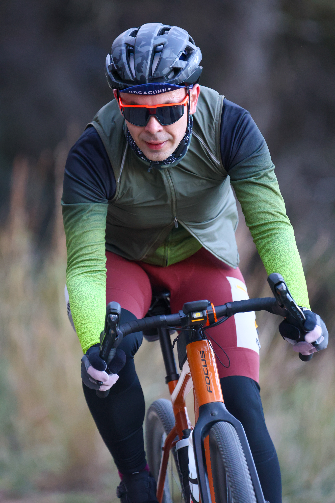

Cingles Gravel Alcover was held in Alcover, Tarragona, on 12 April 2026. The non-competitive solidarity ride welcomed gravel, mountain-bike and e-bike participants, with event coverage by the Image Media team.
Riders could choose between two circular routes starting and finishing at the Pavelló de les Escoles: 53 kilometres with 530 metres of climbing, or 90 kilometres with 1,100 metres. The courses combined open tracks, faster sections and agricultural paths through hazelnut and olive groves in the Alt Camp.

The Alcover event was the third fixture of the Sport1ion Gravel Circuit, following the Priorat Gravel in Falset and Massos Gravel in Maspujols. Sport1ion staged the circuit event with local involvement from Club Ciclista Alcover and Alcogravel, while ACCU Catalunya supported its solidarity focus.
The initiative supported research and awareness around inflammatory bowel diseases, including Crohn's disease and ulcerative colitis. Under the circuit's agreement with ACCU Catalunya, one euro from every 2025–26 circuit registration was allocated to research, awareness and support projects.
The official entry list recorded 89 registrations. The programme also extended beyond the ride, with a children's traffic park and outdoor workshops creating a family-focused morning alongside the mid-route and finish-area refreshments.
The Image Media coverage team comprised Eduardo Castro, Joma and Jose Ramon Moreno. Their photographs documented riders across the gravel terrain and the varied conditions of the two route options.